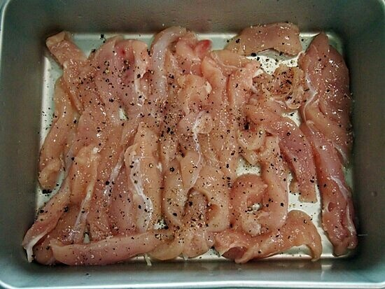
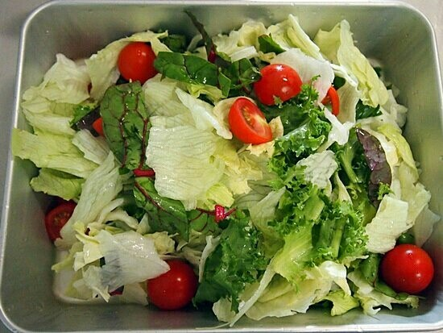
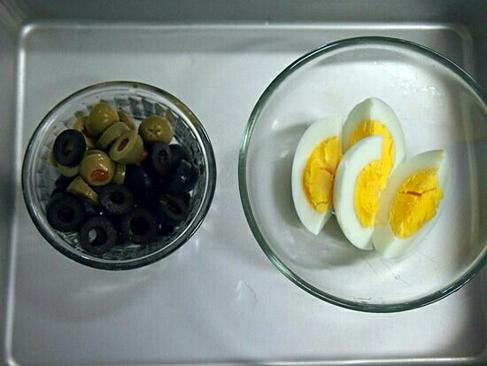
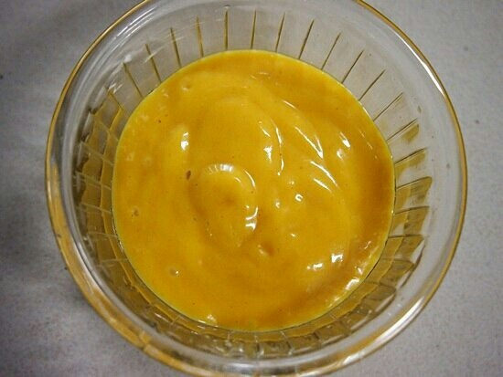
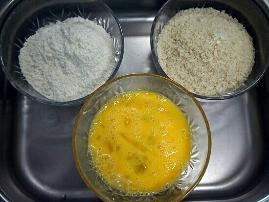

Ingredients
주 재료
- 닭안심300g
- 올리브
- 양상추
- 치커리
- 라디치오
- 달걀1개
- 방울토마토
허니머스터드소스
- 머스터드3큰술
- 마요네즈2큰술
- 꿀2큰술
- 레몬즙2큰술
- 소금약간
- 후추약간
Steps
- 닭안심은 길이대로 길게 폭은 1~1.5굵기로 자른다.

- 안심에 청주,소금,후추를 뿌려 밑간한다. 샐러드용 채소는 찬물에 헹구어 한입크기로 자르고 방울토마토는 반자른다.

- 올리브는 동글게 채썬다. 달걀을 삶아 4등분한다.

- 허니머스터드 소스를 만들어 놓는다.

- 튀김옷 준비

- 팬에 기름을 넉넉히 넣고 달구어 닭안심을 밀가루-달걀물-빵가루를 묻혀 노릇하게 튀겨낸다. 샐러드채소,토마토,올리브를 섞어 접시에 담고 튀긴 안심과
달걀을 올린다. 먹기전에 소스를 뿌린다.